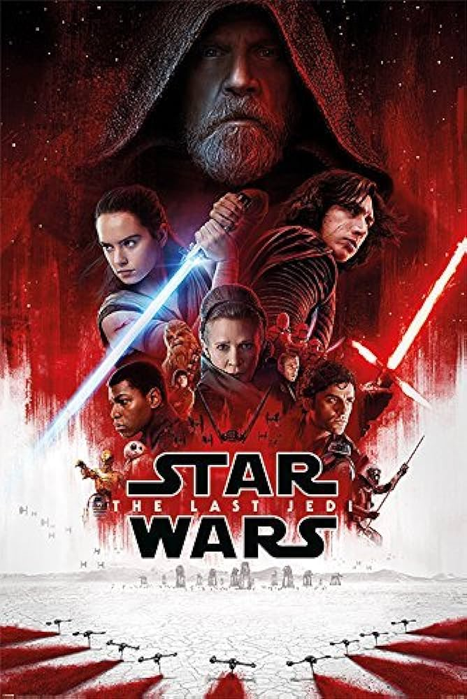
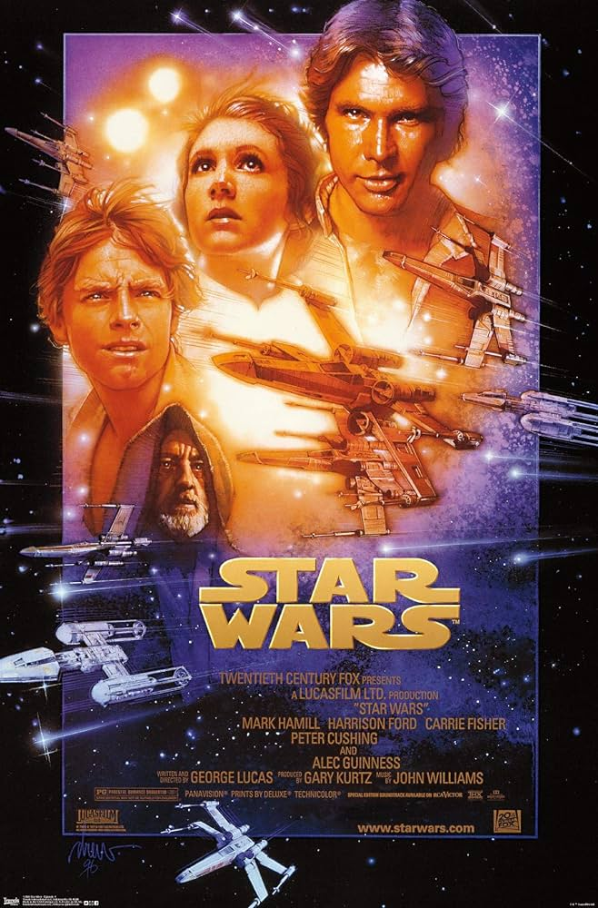
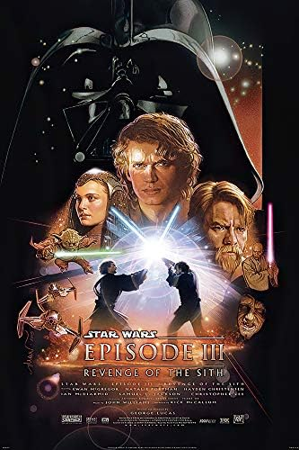
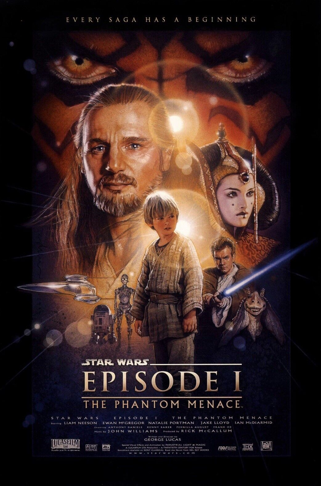

Snoke's Chamber
Place in one of the worse movies in franchise history. This scene does show the "Always Two" sith lords. And the on going struggle of Kylo Ren internal conflict.
Place in one of the worse movies in franchise history. This scene does show the "Always Two" sith lords. And the on going struggle of Kylo Ren internal conflict.

Captured by a Star Destroyer
The openning scene ever for Star Wars revolutionized the sci-fi industry forever. From the iconic hallway to Darth Vader's first ever reveal.
The openning scene ever for Star Wars revolutionized the sci-fi industry forever. From the iconic hallway to Darth Vader's first ever reveal.

Blowing up the Death Star (The second time)
Not as iconic as the first. But still the Rebels blew up the second Death Star, whcih as led to the destruction of the Empire.
Not as iconic as the first. But still the Rebels blew up the second Death Star, whcih as led to the destruction of the Empire.

I know
As if Harrison Ford palying Han Solo and being frozen in carbonite isn't enough. How about his famous one-liner to Leia.
As if Harrison Ford palying Han Solo and being frozen in carbonite isn't enough. How about his famous one-liner to Leia.

Duel on Mustafar
The young padawan turned to the dark side, now he faces his master Obi-War Kenobi one last time. This is the true Duel of the Fates.
The young padawan turned to the dark side, now he faces his master Obi-War Kenobi one last time. This is the true Duel of the Fates.
Order 66
This chilling scence is iconic for its own reason. It show the climactic end of the Jedi and the Republic, while paving the path for the Empire.
This chilling scence is iconic for its own reason. It show the climactic end of the Jedi and the Republic, while paving the path for the Empire.
Destuction of the Death Star
The climactic end to the original movie. The scene has gone down in history as an iconic ending. With this scene being recreated numerous times with one of the most recent movies be Top Gun: Maverick.
The climactic end to the original movie. The scene has gone down in history as an iconic ending. With this scene being recreated numerous times with one of the most recent movies be Top Gun: Maverick.

Duel of the Fates
This is one of the most know duels in the franchise. With the incredible soundtrack and Liam Nesson fighting with a lightsaber, this makes one scene you will not forget. And we can't forget the enhanced technology and choreography that makes this scene so memorable.
This is one of the most know duels in the franchise. With the incredible soundtrack and Liam Nesson fighting with a lightsaber, this makes one scene you will not forget. And we can't forget the enhanced technology and choreography that makes this scene so memorable.
The birth of Darth Vader
The most formidible character in the Star Wars franchise is born. Whatelse is there to say. Everyone knows the famous breathing of Darth Vader and his iconic helmet. And the story of his creation is one of the best duels in the Skywalker Saga.
The most formidible character in the Star Wars franchise is born. Whatelse is there to say. Everyone knows the famous breathing of Darth Vader and his iconic helmet. And the story of his creation is one of the best duels in the Skywalker Saga.
No, I am your Father
This is just the most iconic line from Star Wars. Nothing can top this iconic moment when Darth Vader confronts Luke Skywalker in Cloud City and revealing that Vader himself is Luke's father. Not only is this iconic, but this line shows the workings of the Mandela Effect. Where people believe that the line was "Luke, I am your Father"
This is just the most iconic line from Star Wars. Nothing can top this iconic moment when Darth Vader confronts Luke Skywalker in Cloud City and revealing that Vader himself is Luke's father. Not only is this iconic, but this line shows the workings of the Mandela Effect. Where people believe that the line was "Luke, I am your Father"